Oefen voor N- en F-examen
Oefen voor je zendamateurexamen: vragen over techniek, regels en procedures met uitleg, proefexamens voor N en F en je fouten op één plek – offline.
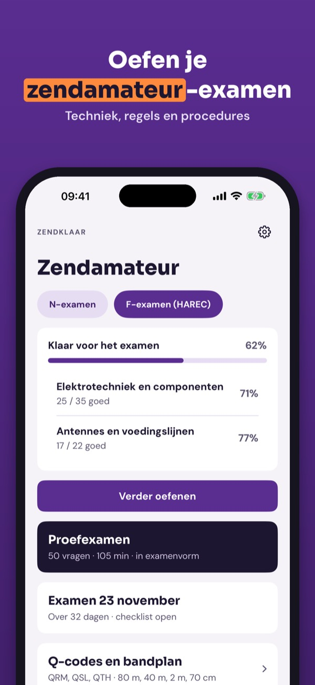
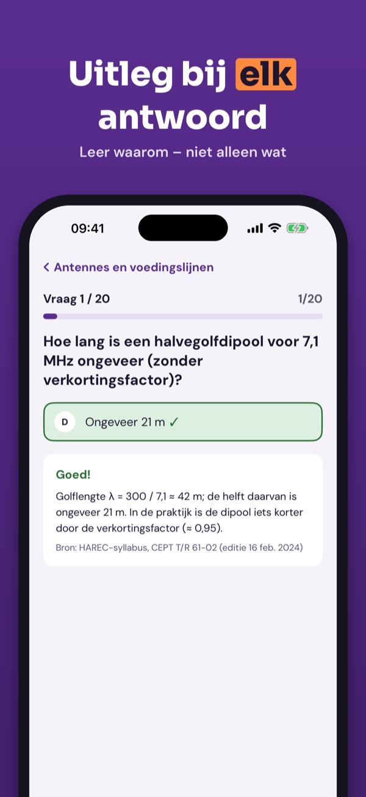
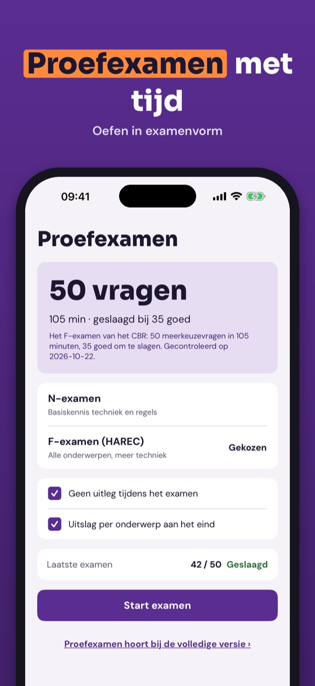
Zendklaar helpt je oefenen voor het zendamateurexamen (N en F, HAREC) – in het Nederlands, met uitleg bij elk antwoord.
• Vragen per onderwerp met uitleg bij elk antwoord
Je kunt 20 vragen, de begrippenlijst en de checklist zonder aankoop gebruiken. De volledige versie is een eenmalige aankoop die alle vragen, proefexamens en statistiek ontgrendelt. Geen abonnement.
Zendklaar is onafhankelijk en niet verbonden aan de RDI, VERON of een examenorganisatie. De vragen zijn onze eigen vragen.
Terms of Use (EULA): https://www.apple.com/legal/internet-services/itunes/dev/stdeula/
Privacy: https://baytechbv.github.io/privacy/zendamateur-eu/
Öva inför certifikatprovet
Öva inför provet för amatörradiocertifikat: frågor om teknik, regler och trafik med förklaring, övningsprov och dina fel samlade – utan internet.
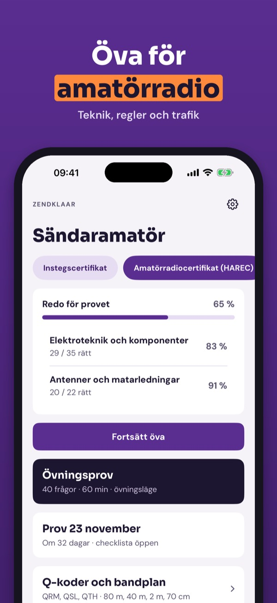
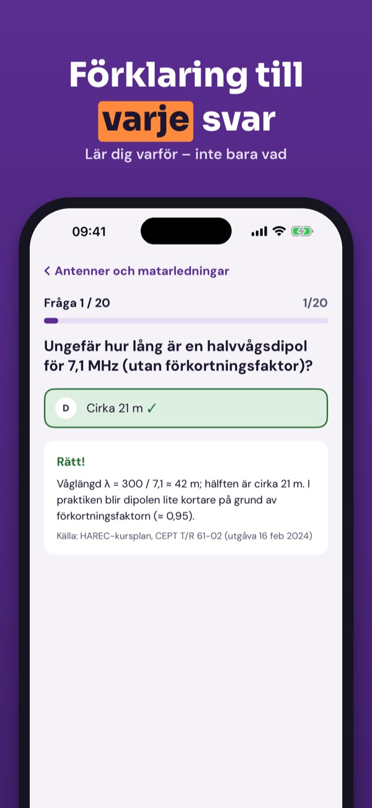
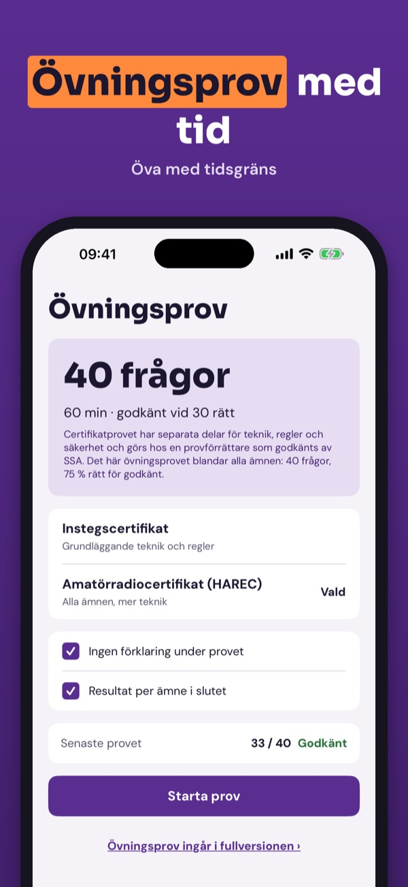
Amatörklar hjälper dig att öva inför provet för amatörradiocertifikat (HAREC) – på svenska, med förklaring till varje svar.
• Frågor per ämne med förklaring till varje svar
Du kan använda 20 frågor, ordlistan och checklistan utan köp. Fullversionen är ett engångsköp som låser upp alla frågor, övningsprov och statistik. Ingen prenumeration.
Amatörklar är fristående och inte kopplad till PTS, SSA eller någon provförrättare. Frågorna är våra egna.
Terms of Use (EULA): https://www.apple.com/legal/internet-services/itunes/dev/stdeula/
Privacy: https://baytechbv.github.io/privacy/zendamateur-eu/
Øv dig til certifikatprøven
Øv dig til prøven til amatørradiocertifikat: spørgsmål om teknik, regler og trafik med forklaring, prøveeksamener og dine fejl samlet – uden internet.
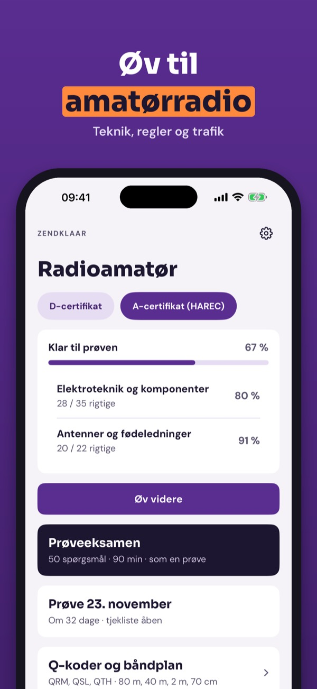
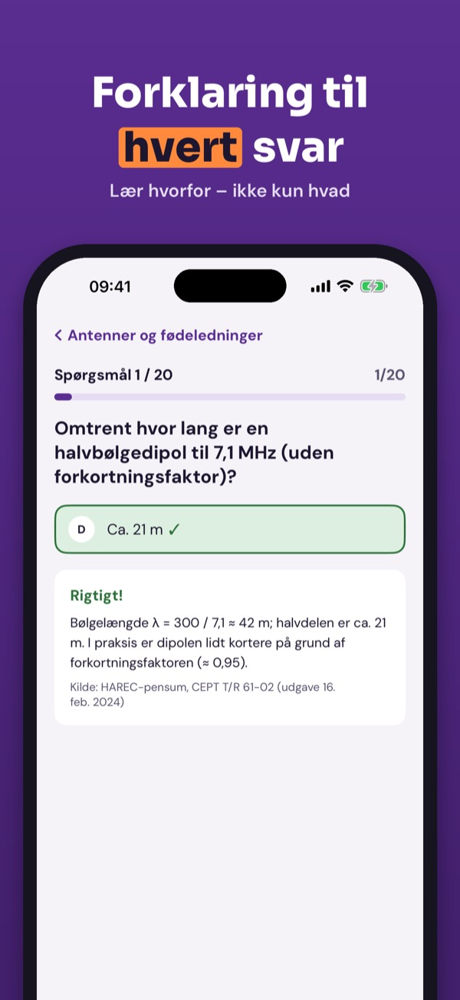
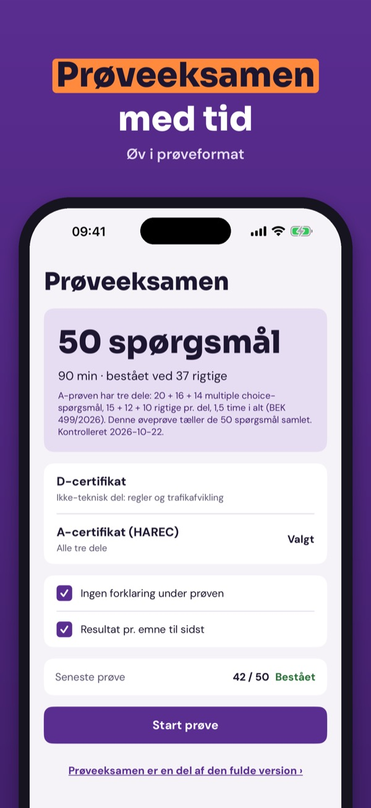
Amatørklar hjælper dig med at øve dig til prøven til amatørradiocertifikat (HAREC) – på dansk, med forklaring til hvert svar.
• Spørgsmål pr. emne med forklaring til hvert svar
Du kan bruge 20 spørgsmål, ordlisten og tjeklisten uden køb. Den fulde version er et engangskøb, der låser alle spørgsmål, prøveeksamener og statistik op. Intet abonnement.
Amatørklar er uafhængig og ikke tilknyttet myndighederne, EDR eller nogen prøveafholder. Spørgsmålene er vores egne.
Terms of Use (EULA): https://www.apple.com/legal/internet-services/itunes/dev/stdeula/
Privacy: https://baytechbv.github.io/privacy/zendamateur-eu/
Valmistaudu pätevyystutkintoon
Valmistaudu radioamatöörin pätevyystutkintoon: tekniikka, säännöt ja liikennöinti selityksineen, harjoituskokeet ja virheiden kertaus – ilman nettiä.
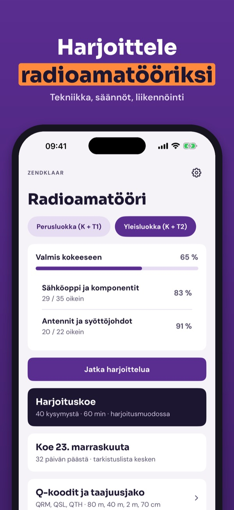
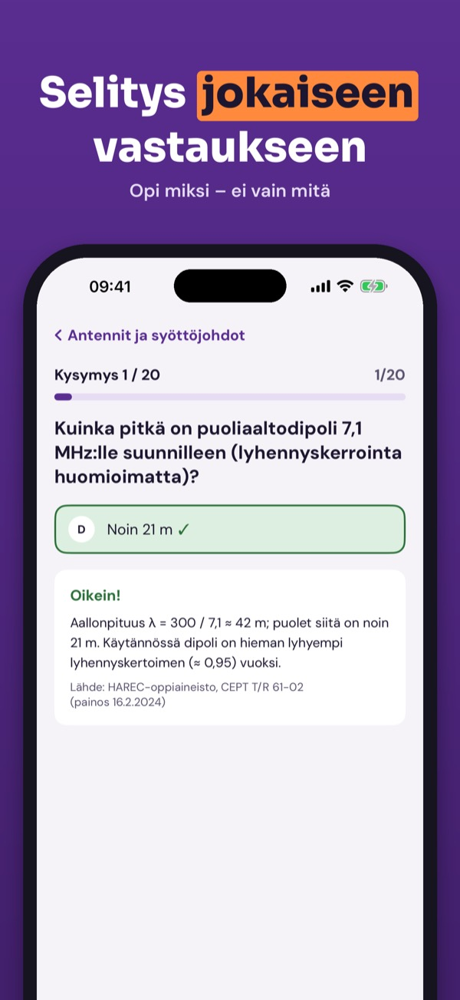
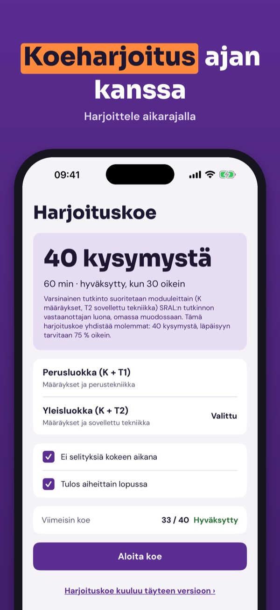
Amatöörklar auttaa harjoittelemaan radioamatöörin pätevyystutkintoa (HAREC) – suomeksi, selitys jokaiseen vastaukseen.
• Kysymykset aiheittain, selitys jokaiseen vastaukseen
Voit käyttää 20 kysymystä, sanastoa ja tarkistuslistaa ilman ostoa. Täysi versio on kertaosto, joka avaa kaikki kysymykset, harjoituskokeet ja tilastot. Ei tilausta.
Amatöörklar on itsenäinen eikä liity Traficomiin, SRAL:iin tai tutkinnon vastaanottajiin. Kysymykset ovat omiamme.
Terms of Use (EULA): https://www.apple.com/legal/internet-services/itunes/dev/stdeula/
Privacy: https://baytechbv.github.io/privacy/zendamateur-eu/
Üben für Klasse N, E und A
Übe für die Amateurfunkprüfung: Fragen zu Technik, Betrieb und Vorschriften mit Erklärung, Probeprüfungen und deine Fehler an einem Ort – offline.
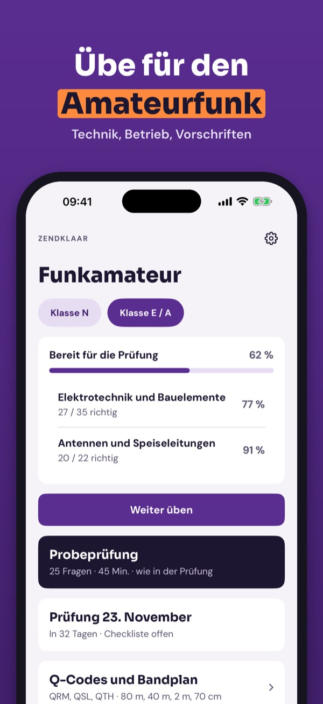
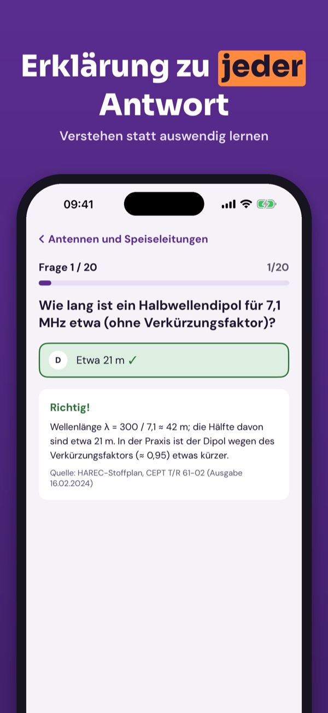
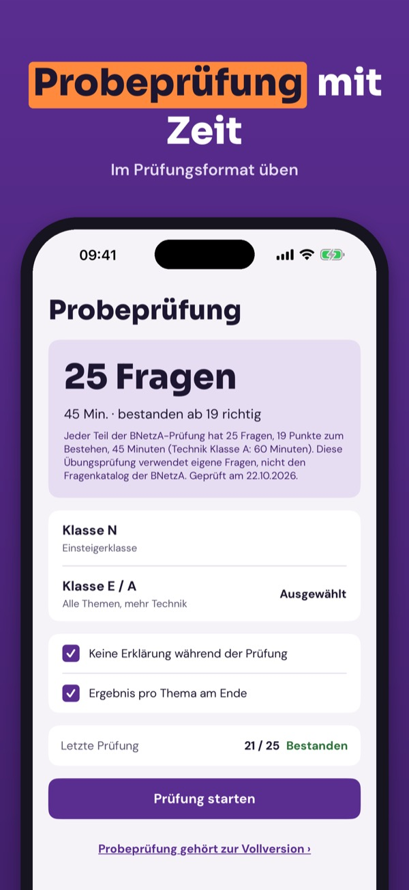
Zendklaar hilft dir beim Üben für die Amateurfunkprüfung (Klassen N, E, A / HAREC) – mit Erklärung zu jeder Antwort.
• Fragen nach Thema mit Erklärung zu jeder Antwort
20 Fragen, die Begriffe und die Checkliste kannst du ohne Kauf nutzen. Die Vollversion ist ein Einmalkauf und schaltet alle Fragen, Probeprüfungen und die Statistik frei. Kein Abo.
Zendklaar ist unabhängig und nicht mit der Bundesnetzagentur, dem DARC oder einer Prüfstelle verbunden. Die Fragen sind unsere eigenen.
Terms of Use (EULA): https://www.apple.com/legal/internet-services/itunes/dev/stdeula/
Privacy: https://baytechbv.github.io/privacy/zendamateur-eu/